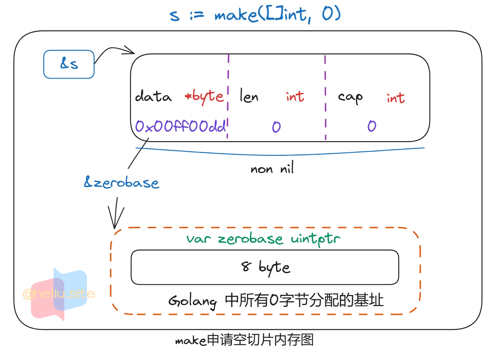
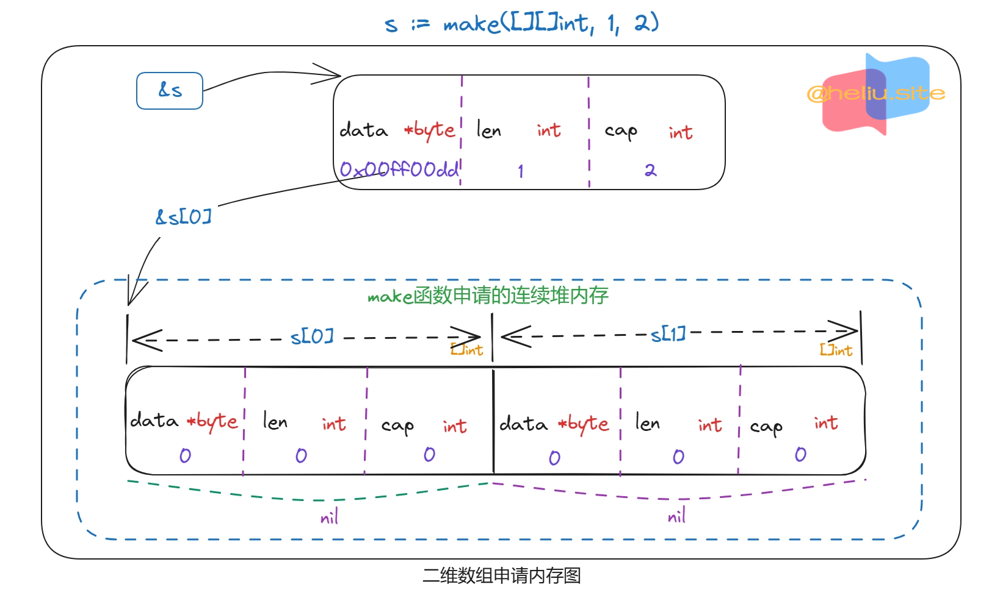

Slice(使用)
💥本文章所有相关go代码参考自go 1.18+版本
- 切片：对底层数组的一个连续片段的引用，所以切片是一个引用类型（和数组不一样）该数组称为相关数组，通常是匿名的。
- 切片提供对该数组中编号的元素序列的访问。
- 未初始化切片的值为
nil（注意：nil切片和空切片[]的区别）。 - 与数组一样切片是可索引的并且具有长度。
- 切片
s的长度可以通过内置的len()函数获取，与数组不同切片的长度可能在执行期间发生变化。 - 元素可以通过整数索引
0到len(s)-1来寻址，切片相当一个长度可变的数组。 - 计算容器的函数
cap()。可以计算切片最大长度。 - 切片的长度永远不会超过它的容量，所以对于s切片来说，
0 <= len(s) <= cap(s)。 - 一旦初始化，切片始终与保存其元素的基础数据相关联。
- 因此，切片会和其拥有同一基础数据的其他切片共享存储。
- 相比之下，不同的数组总是拥有不同的存储。
- 使用
make()函数可以给切片初始化，该函数指定切片类型、长度和可选容量的参数。 - 因为切片是引用，所以他们不需要使用额外的内存，并且比数组更高效，因此切片比数组常用。
声明切片
- 声明切片格式。不需要指定长度，切片在未初始化之前默认为
nil，长度为0。
|
|
- 切片初始化格式。
slice1是由数组arr1从start索引到end-1索引之间的元素构成的子集。start:end称为slice表达式。
|
|
- 切片初始化格式。
|
|
- 使用
make()函数来创建一个切片。
|
|
make函数的len是数组的长度也是slice的初始长度，cap是容量，是可选参数。
|
|
- 从数组或者切片中生成一个新的切片。
|
|
|
|
- 切片取值时索引大于长度会导致异常发生，即使容量远远大于长度也没有用。
|
|
- 创建切片汇总。
|
|

切片初始化
array、string、slice 使用 [:]
- 数组使用
[:]返回的是对应的【切片】类型，数组使用[low:high:max]时，low和high、max必须是满足[0, len(array)]范围。 - 字符串使用
[:]返回的还是【字符串】类型，字符串使用[low:high]时，low和high必须是满足[0, len(string)]范围。字符串不支持第三个参数max也没任何意义。 - 切片使用
[:]返回的还是【切片】类型，切片使用[low:high:max]时，low和high、max必须满足[0, cap(slice)]范围。
|
|
[:]初始化
|
|
| 操作 | 含义 |
|---|---|
s[n] |
切片s中索引位置为n的项 |
s[:] |
从切片s的索引位置0到len(s)-1处所获得的切片 |
s[low:] |
从切片s的索引位置low到len(s)-1处所获得的切片 |
s[:high] |
从切片s的索引位置0到high处所获得的切片，len == high |
s[low:high] |
从切片s的索引位置low到high处所获得的切片，len == high-low |
s[low:high:max] |
从切片s的索引位置low到high处所获得的切片，len == high-low，cap == max-low |
len(s) |
切片s的长度，总是 <= cap(s) |
cap(s) |
切片s的容量，总是 >= len(s) |
s[low:high:max]：- 省略
low默认为0。 - 省略
high默认为len(s)。 - 省略
max默认为cap(s)。
- 省略
|
|
make()创建切片
|
|
|
|
- 可直接创建
slice对象，自动分配底层数组。
|
|
- 使用
make动态创建slice，避免了数组必须用常量做长度的麻烦。 - 还可用指针直接访问底层数组，退化成普通数组操作。
|
|
二维切片
- 至于
[][]T，是指元素类型为[]T，该结构为二维切片。
|
|

|
|
- 可直接修改
struct array/slice成员。
|
|
append()追加元素
append(s S, x ...T) S- 向
s切片中追加数据T（T的类型为s切片的元素类型）S = []T。返回追加后的切片S。
- 向
|
|
|
|
append：向slice尾部添加数据，返回新的slice对象。
|
|
|
|
slice.cap 限制
- 会重新分配底层数组，即便原数组并未填满。
|
|
- 从输出结果可以看出：
append后的s重新分配了底层数组，并复制数据。- 如果只追加一个值，则不会超过
s.cap限制，也就不会重新分配。 - 通常以
2倍容量重新分配底层数组。
- 在大批量添加数据时，建议一次性分配足够大的空间，以减少内存分配和数据复制开销。
- 或初始化足够长的
len属性，改用索引号进行操作。 - 及时释放不再使用的
slice对象，避免持有过期数组，造成GC无法回收。
copy() 使用
copy(to, fm slice) int与copy(to []byte, fm string) int。
|
|
- 函数
copy在两个slice间复制数据，复制长度以len小的为准。 - 两个
slice可指向同一底层数组，允许元素区间重叠（两个切片都指向同一底层数组时需要注意覆盖问题）。
|
|
- 应及时将所需数据
copy到较小的slice，以便释放超大号底层数组内存。
遍历切片
|
|
字符串和切片
string：底层就是一个的数组，因此，也可以进行切片操作。string数据结构：type string struct {data uintptr; len int}。
|
|
string本身是不可变的，因此要改变string中字符。
|
|
nil切片和空切片区别
- nil切片表示切片没有初始化，也就是没有分配存储地址。
- 空切片则是切片已经初始化，并分配了存储地址。
|
|
// 看下相关汇编
string.go:7 0x496680 493b6610 cmp rsp, qword ptr [r14+0x10]
string.go:7 0x496684 767d jbe 0x496703
string.go:7 0x496686 4883ec68 sub rsp, 0x68
string.go:7 0x49668a 48896c2460 mov qword ptr [rsp+0x60], rbp
string.go:7 0x49668f 488d6c2460 lea rbp, ptr [rsp+0x60]
// 这是设置 slice.data = 0 可以看出并没有分配存储内存
string.go:8 0x496694 48c744243000000000 mov qword ptr [rsp+0x30], 0x0
// 这里是 slice.len = slice.cap = 0 设置了长度和容量
string.go:8 0x49669d 440f117c2438 movups xmmword ptr [rsp+0x38], xmm15
|
|
// 看下相关汇编
string.go:7 0x46d240 4883ec30 sub rsp, 0x30
string.go:7 0x46d244 48896c2428 mov qword ptr [rsp+0x28], rbp
string.go:7 0x46d249 488d6c2428 lea rbp, ptr [rsp+0x28]
// []string的底层数组被编译器直接分配在了栈上，因为rsp存储的是栈上的值
string.go:8 0x46d24e 488d0424 lea rax, ptr [rsp] // rax = rsp 存储的值
// [rsp+0x8] = rax 这里是存储的变量sl的地址空间指向slice.data
string.go:8 0x46d252 4889442408 mov qword ptr [rsp+0x8], rax
string.go:8 0x46d257 8400 test byte ptr [rax], al
string.go:8 0x46d259 eb00 jmp 0x46d25b
// [rsp+0x10] = rax slice.data = rax 可以看出是分配了地址空间
string.go:8 0x46d25b 4889442410 mov qword ptr [rsp+0x10], rax
// 这里是 slice.len = slice.cap = 0 设置了长度和容量
string.go:8 0x46d260 440f117c2418 movups xmmword ptr [rsp+0x18], xmm15
string.go:10 0x46d266 eb00 jmp 0x46d268
string.go:13 0x46d268 488b6c2428 mov rbp, qword ptr [rsp+0x28]
.:0 0x46d26d 4883c430 add rsp, 0x30
.:0 0x46d271 c3 ret
切片重组
- 通过改变切片长度得到新切片的过程称为切片重组。
- 如
slice1 = slice1[0:end]取值范围len = end - 0; cap = cap - 0; - 其中
end是新的末尾索引（即长度）。
- 如
- 在一个切片基础上重新划分一个切片时，新的切片会继续引用原有切片的相关数组。
- 如果忘记这个行为，在程序内存内分配占用大量的内存的临时切片。
- 然后在这个临时切片基础上创建只引用一小部分原有数据的新切片时。
- 会导致难以预期的内存使用结果。
|
|
- 为了避免这个陷阱，需要在临时的切片中使用内置函数copy()，复制数据（而不是重新引用划分切片）到新切片。
|
|
- 需要向切片末尾追加数据时，可以使用内置函数
append()。
|
|
append函数将0个或多个具有相同类型S的元素追加到切片s后面并且返回新的切片。- 追加的元素必须和原切片的元素同类型，如果
s的容量不足以存储新增元素，append会分配新的切片来保证已有切片元素和新增元素的存储。 - 因此
append函数返回的切片可能已经指向一个不同的相关数组了，即使修改了数据也不会同步。 append()函数总是返回成功，除非系统内存耗尽了。
|
|
|
|
陈旧的切片
- 多个切片可以引用同一个底层相关数组。
- 某些情况下在一个切片中添加新的数据，在原有数组无法保持更多新的数据时，将导致分配一个新的数组。
- 而其他的切片还指向老的数组（和老的数据）。
append()函数操作后，有没有生成新的切片需要看原有的切片的容量是否足够。
|
|